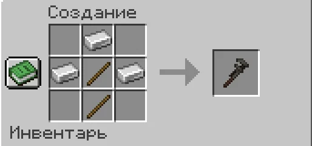
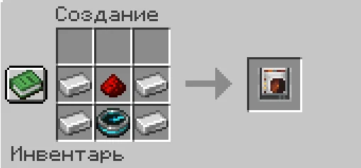

Гаечный ключ
Гаечный ключ изменяет свойства поддерживаемых блоков, натягивает цепи и помогает выращивать шпалерные культуры.
Крафт на верстаке:

| Управление | Результат |
|---|---|
| ЛКМ по поддерживаемому блоку | Выбор свойства |
| ПКМ | Изменение значения свойства |
| Shift при переключении | Обратное направление перебора |
Прочность: 256 единиц. Каждое изменение блока расходует 1 единицу.
Локатор
Крафт на верстаке:

- Нажми ПКМ локатором и введи координаты и название, например
120 64 -300 Дом. - Или нажми ПКМ локатором по магнетиту для установки метки прямо в его точке.
- Следуй за оранжевым маркером на панели локатора над инвентарём.
| Команда | Действие |
|---|---|
/locator info |
Показать справку |
/locator clear |
Убрать метку |
Декор и предметы
| Действие | Как сделать |
|---|---|
| Настроить стойку | Посмотри на стойку для брони и введи /stand |
| Изменить цвет названия | Ткацкий станок и краситель |
| Снять окраску | Кисточка |
| Подписать предмет | /sign [текст] |
| Снять свою подпись | /unsign |
| Защитить карту от копирования | /lock |
| Убрать защиту карты | /unlock |
| Сделать рамку невидимой | Ножницы по рамке |
| Заблокировать вращение рамки | Пчелиные соты по рамке; топор снимает блокировку |
| Восстановить наковальню | Железный блок + ПКМ по повреждённой наковальне — одна стадия |
Подробнее: цепи, фермерство, другие механики.